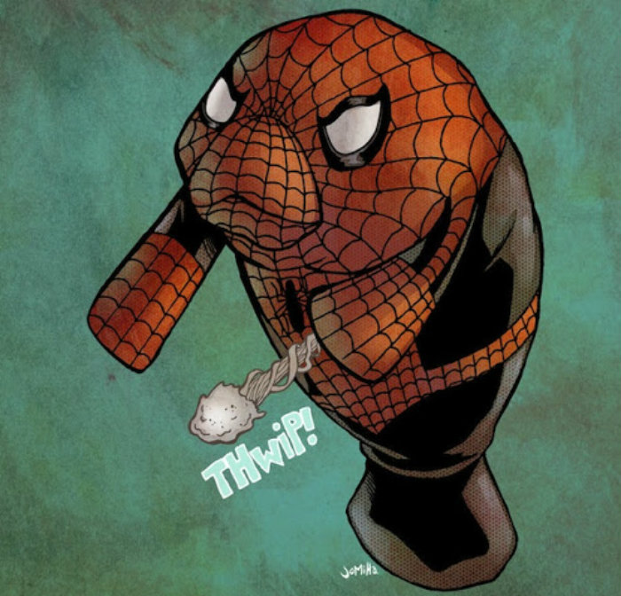

Todos concordamos que esse bioma é um dos melhores. Os ecossistemas marinhos incluem os mares e oceanos, os quais cobrem aproximadamente 71% da superfície terrestre. Nesse ambiente existem diversas espécies incríveis!
Tá curioso(a) pra saber quem é o "peixão" ali do lado? Dá um clique e fica sabendo a identidade misteriosa do nosso amigo.
O Peixe-boi (Trichechus inunguis) é um animal da ordem Sirenia, da família Trichechidae. Existem três espécies diferentes desse animal em todo mundo, sendo duas encontradas no Brasil. Apesar do nome, o peixe-boi não é um peixe, e sim um animal mamífero. À direita, um peixe-boi-aranha.
| Características | |
| Tempo de vida | 60 anos (expectativa) |
| Peso Adulto | Cerca de 480 quilos |
| Comprimento | Até 3 metros |